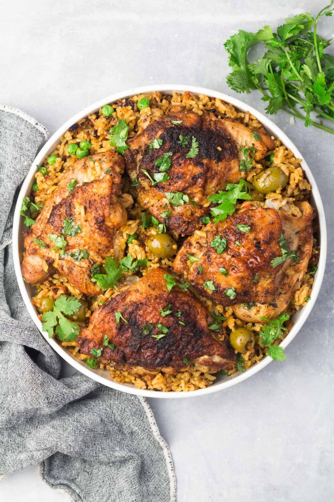

Arroz Con Pollo

Description
A classic dish in my house growing up.
Ingredients
- 2 cups medium grain rice
- 2 cups water
- 1 packet sazon
- 4 bone-in skin-on chicken thighs
- 1/4 cup sofrito
- 1T sherry
- 1t oregano
- 1t cumin
- 1t paprika
- 2 bay leaves
- 1/4 cup green peas
- 1/4 cup green olives
- 1 1/2t salt
- pepper to taste
- 2-3T oil
Steps
- In a small bowl, mix the cumin oregano and paprika. Seasonthe chicken with salt and pepper to taste. Make sure to season under the skin as well. Sprinkle some of the spice mixture on top of the chicken and set aside.
- Heat the oil in a heavy pot over medium-high heat. Add the chicken skin-side down and cook for 4-5 minutes on each side.
- Remove the chicken thighs from the pot and set aside.
- Add the sofrito, remaining spice mixture, sazon, and sherry. Cook for 15 seconds.
- Stir in the rice and coat well. Cook for one minute.
- Add the water, salt, black pepper, bay leaf, and green olives. Mix well. Place the chicken back into the skillet. Let the rice come up to a boil. This should take around 5 minutes over medium-high heat depending on elevation.
- Once the rice comes up to a boil, cover with aluminum foil and a lid. Reduce the heat to medium-low and cook for 45 minutes.
- Once the 45 minutes are up, uncover the rice and remove the chicken from the pot. Use a fork to fluff the rice and stir in the green peas. Place the chicken back on top of the rice, cover, and let it sit for 5 minutes.
- Garnish with fresh cilantro, if desired.